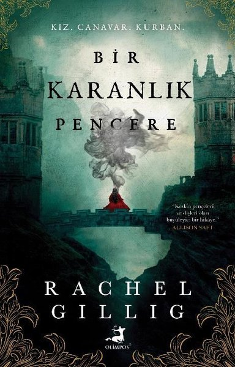
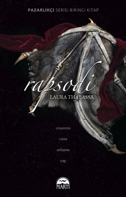

- Yazar: Rebecca Yarros
- Sayfa Sayısı: 672
- İlk Basım Yılı: 2023
- Konusu:
Kitaplar ve tarih arasında sakin bir hayat süren yirmi yaşındaki Violet Sorrengail’in Kâtipler Bölüğü’ne girmesi beklenmektedir. Ancak general –aynı zamanda pençe kadar sert olarak bilinen annesi– onun Navarre’ın seçkinlerinden biri, yani bir ejderha binicisi olması için yüzlerce adayın arasına katılmasını emreder. Fakat herkesten ufak ve narin olduğunuzda ölmek an meselesidir... çünkü ejderhalar “kırılgan” insanlarla bağ kurmazlar. Onları küle çevirirler. Bağ kurmak isteyen ejderhaların sayısı adayların sayısından az olduğu için çoğu aday başarı şansını artırmak adına Violet’ı öldürmeye hazırdır. Kalanlarsa onu sırf annesinin kızı olduğu için öldürmek ister, tıpkı Biniciler Bölüğü’nün en güçlü ve de en acımasız kanat lideri Xaden Riorson gibi. Violet, bir sonraki gün doğumunu görmek için bile zekâsının her zerresini kullanmak zorundadır. Öte yandan her geçen gün dışarıdaki savaş daha ölümcül bir hâl almakta, krallığın koruma bölgeleri tek tek yıkılmakta ve ölü sayısı artmaktadır. Daha da kötüsü, Violet önderlerinin korkunç bir sır sakladıklarından şüphelenmektedir. Arkadaşlar, düşmanlar, sevgililer… Basgiath Savaş Akademisi’ndeki herkesin sakladığı bir şeyler vardır çünkü bu akademiye bir kez girdiniz mi sadece iki şekilde çıkabilirsiniz: mezun olarak ya da ölerek.
Kitabı Satın Almak İçin Tıklayınız
★ Bir Karanlık Pencere

- Yazar: Rachel Gillig
- Sayfa Sayısı: 400
- İlk Baskı Yılı: 2023
- Konusu:
Elspeth’in Bir Canavara İhtiyacı Var. O Canavar Bizzat Kendisi Olabilir. Bu Gotik Fantastik Çıkış Romanında Bir Genç Kız Krallığını Kurtarmak İçin Zihnindeki Canavarı Serbest Bırakmalıdır. Elspeth Spindle’ın bir sisin içine hapsedilmiş ürkütücü Blunder Krallığı’nda güven içinde yaşayabilmek için şanstan daha fazlasına ihtiyacı vardır. Bir canavara... Kâbus dediği bu kadim, kurnaz r uh kafasının içinde yaşar. Onu korur. Sırlarını saklar. Fakat her şeyin bir bedeli vardır, özellikle de sihrin. Elspeth orman yolunda gizemli bir haydutla karşılaştığında hayatı temelinden sarsılır. Gölgeler ve aldatmacalarla örülü bir hayata sürüklenen Elspeth, Blunder’ı dört bir yanını saran kara büyüden kurtarmak için tehlikeli bir göreve dâhil olur. Ne var ki haydut bildiği kişi Kral’ın öz yeğeni, Blunder’daki en tehlikeli adamların komutanından başkası değildir… ve vatana ihanet suçlusudur.
Kitabı Satın Almak İçin Tıklayınız
★ Rapsodi

- Yazar: Laura Thalassa
- Sayfa Sayısı: 432
- İlk Baskı Yılı: 2022
- Konusu:
Pazarlığa Var mısın? Doğaüstü varlıkların dünyasında herkesin bildiği bir gerçek vardı: İyiliğe ihtiyacınız varsa Pazarlıkçı’ya giderdiniz. O, bir bedel karşılığında istediğiniz her şeyi size verebilirdi; fakat Pazarlıkçı’nın yaptığı bu iyiliklerin bedelini er ya da geç talep edeceğini de göze almanız gerekirdi. Ancak bir müşterisinden asla geri ödeme talep etmedi. Ta ki bugüne kadar… Callypso Lillis, geçmişe uzanan büyük sorunlara sahip bir sirendi. Son yedi yılını, Pazarlıkçı’dan satın aldığı iyiliklerin bedeli olan, siyah boncuklardan yapılmış bir bileziğin ağırlığını taşıyarak geçirmişti ve bu iyiliklerin karşılığını ödemek hiç kolay olmayacaktı. Peri kralı dudaklarındaki ufak gülümseme ve gözlerindeki parıltıyla odasında belirdiğinde Callie her şeyin değişmek üzere olduğunu anladı. İlk başta, Pazarlıkçı ondan tek bir boncuk karşılığında masum bir öpücük aldı. Ve daha fazlası için söz verdi. Ancak bu ödeşme, aralarındaki eski romantizmi alevlendirmekten öteydi. Ötedünya’da tuhaf olaylar yaşanıyordu: Peri savaşçılar birer birer ortadan kayboluyor, sadece kadın savaşçılar cam bir tabutta geri dönüyordu. Pazarlıkçı’nın halkını kurtarmak için bir umudu varsa da bu, uzun zaman önce reddettiği sirenin yardımıyla olacaktı.
Kitabı Satın Almak İçin Tıklayınız